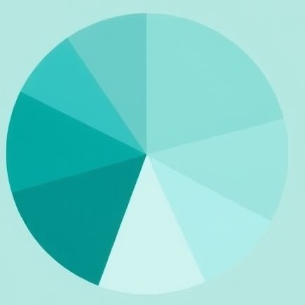
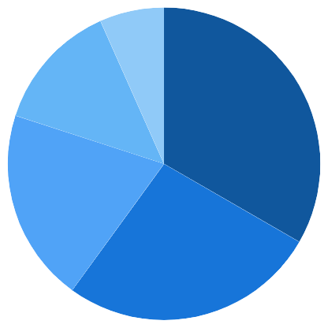

<div class="container-fluid">
    <div class="row">
        <div class="col-4">
              
                        
            <div [appMode]="mode">
                <h3>Wanna keep track of money!!</h3>
                <p>Track your expenses with colorful charts that make budgeting fun, organized, and easy to follow! </p>
            </div>
        </div>
        <div class="col-8">
            <p>Finance and expenses are critical components of any organization’s financial health, impacting its ability to grow, operate, and achieve long-term sustainability. Proper financial management involves monitoring income, allocating resources efficiently, and tracking expenditures to ensure they align with the company’s goals and budget. Expenses can be categorized into fixed and variable costs, with fixed expenses remaining constant, such as rent and salaries, while variable costs fluctuate, such as raw materials and utilities. Effective control of expenses is essential to maintaining profitability, and businesses must regularly assess their spending patterns to identify areas for cost-cutting or investment. Balancing income and expenses ensures that an organization remains solvent and competitive, paving the way for future growth and financial stability</p>
        </div>
    </div>
</div>